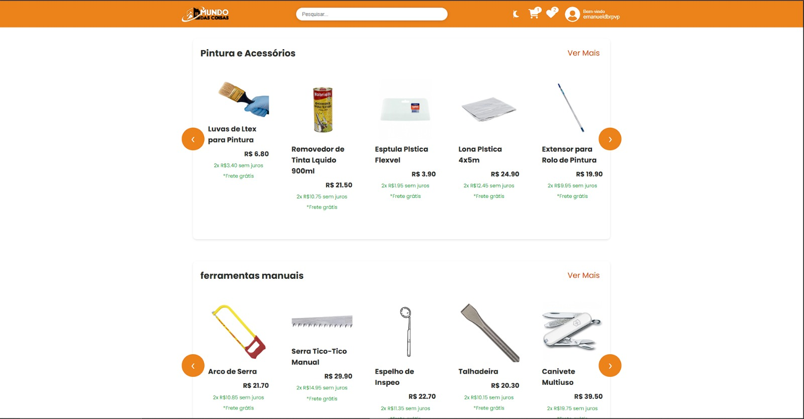
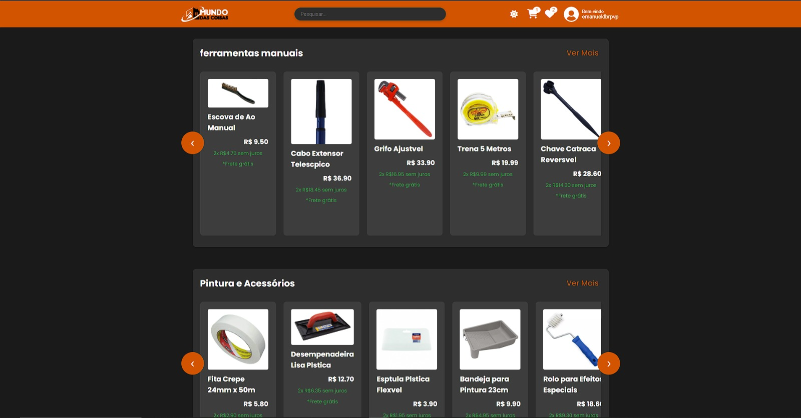
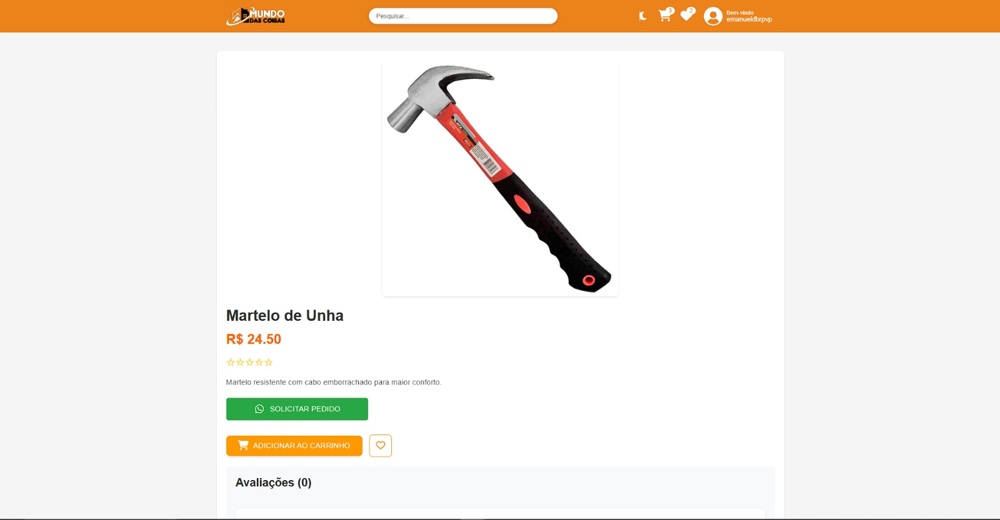
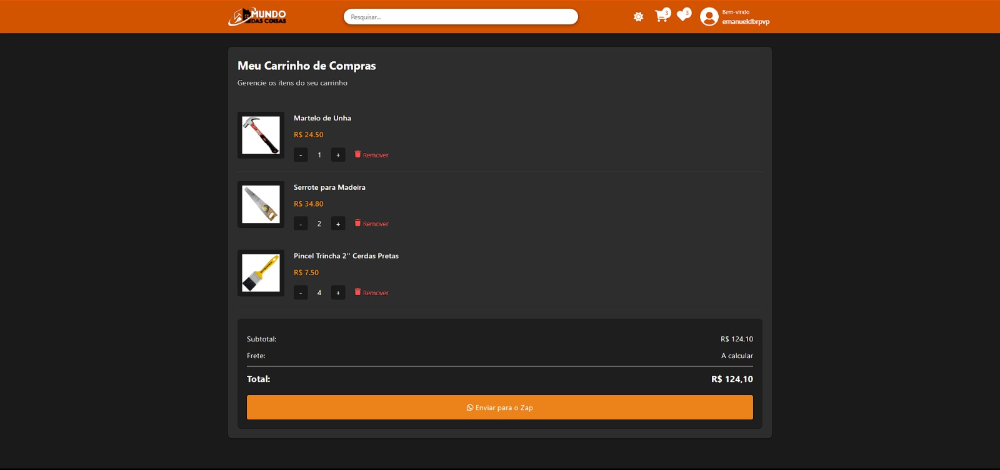

Nº 006
Financeiro App
Scripts que leem extratos do Nubank e PicPay e calculam faturamento mensal contra uma meta anual, mais app mobile e desktop de acompanhamento financeiro pessoal.
Uso pessoal
Código
Painel ativo — 18 projetos registrados · atualizado em 2026
Sistema completo de tramitação de proposições para a Câmara Municipal de Terra Roxa/SP, em Django e React: protocolo automático, despacho da presidência, comissões com prazos reais do Regimento Interno, parecer jurídico, plenário com votação, sanção e veto do prefeito, portal de transparência público e painel de auditoria de segurança.
Cada transição de status passa por uma máquina de estados auditável — django-fsm registrando quem fez o quê e quando, exigida por qualquer órgão sujeito à Lei de Acesso à Informação.
Os projetos que melhor mostram a amplitude do trabalho: de plataforma paga com integração de pagamento a app mobile em uso real e loja com checkout via WhatsApp.
Plataforma de treinamento e certificação em segurança do trabalho (Normas Regulamentadoras): catálogo dinâmico de cursos, compra por voucher, painel B2B para gestão de alunos, controle de tempo de tela em sala, geração de certificado e login com Google.
Checkout de verdade — integração com Mercado Pago e PagBank, não um formulário decorativo.
Loja virtual de ferragens e material de construção: catálogo por categoria com carrossel, página de produto, carrinho com subtotal, modo escuro completo e finalização de pedido direto pelo WhatsApp — o fluxo real que um pequeno comércio usa.




App mobile (Expo/React Native) para visualizar hinos com letra e cifra em imagem — busca, favoritos e zoom por pinça (pinch-to-zoom). Sem download automático: como não existe API pública de cifras, o app foi desenhado para o próprio usuário importar suas imagens.
Produto SaaS B2B2C pensado a partir do contato direto com a rotina da Câmara: site público personalizado por mandato + área do cidadão para indicar problemas com foto e localização, reivindicar soluções e sugerir projetos de lei, com painel administrativo completo para gestão do mandato.
Ferramentas, bots e produtos menores — cada um resolvendo um problema específico e real, próprio ou de terceiros.
Scripts que leem extratos do Nubank e PicPay e calculam faturamento mensal contra uma meta anual, mais app mobile e desktop de acompanhamento financeiro pessoal.
Web app para baixar vídeo e áudio sem anúncios, com suporte a múltiplas resoluções via FFmpeg. Versões web e desktop.

Robô que pesquisa publicações por número de OAB no Comunica PJe/DJEN, Querido Diário e DOU, gera relatório em PDF, HTML e CSV, e evita alertas duplicados. Roda local, agendável no Windows.
Site institucional para escritório de advocacia, com autenticação e banco de dados próprios — entregue como projeto de cliente.
Rede social para compartilhar cifras musicais sincronizadas — projeto de estudo aplicando a metodologia Spec Driven Development do início ao fim, com documentação completa do processo.
Backend e API de administração para um jogo de construção de cidades: loja com categorias, eventos com imagem, atualizações do jogo e sistema de reporte de bugs.
Ferramenta de automação de envio de mensagens no WhatsApp via Selenium, com exemplos de uso simples, complexo e reutilizável.
Skill de IA para agentes rodarem auditorias de segurança automatizadas em projetos baseados em OpenSpec — análise estática seguida de checagem dinâmica opcional.
App construído com Google AI Studio integrando a API do Gemini, com autenticação e dados via Firebase.
Exercícios, atividades avaliativas e protótipos iniciais — menor escopo, mas parte real do percurso.
Servidor da Câmara Municipal de Terra Roxa/SP e desenvolvedor fullstack — na prática, a mesma disciplina aplicada a dois ofícios.
O trabalho na Câmara exige acompanhar prazo, protocolo e rito com precisão — e foi esse contato direto com a burocracia legislativa real que virou o Sistema de Tramitação: não um exercício acadêmico sobre "como funciona uma câmara", mas um sistema construído com acesso ao Regimento Interno de verdade, prazo por prazo.
O restante do painel mostra a outra metade: mobile, e-commerce, automação, ferramentas de linha de comando — construído sozinho, projeto por projeto, aprendendo o que cada stack exige na prática em vez de ficar em um único ecossistema confortável.